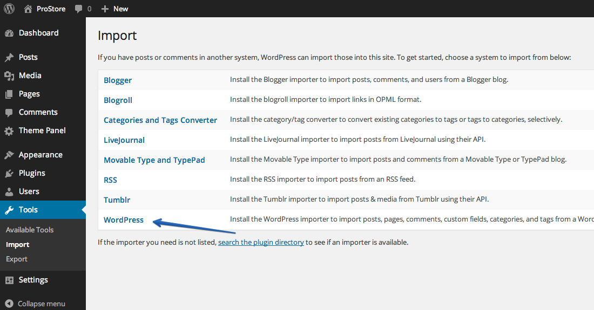
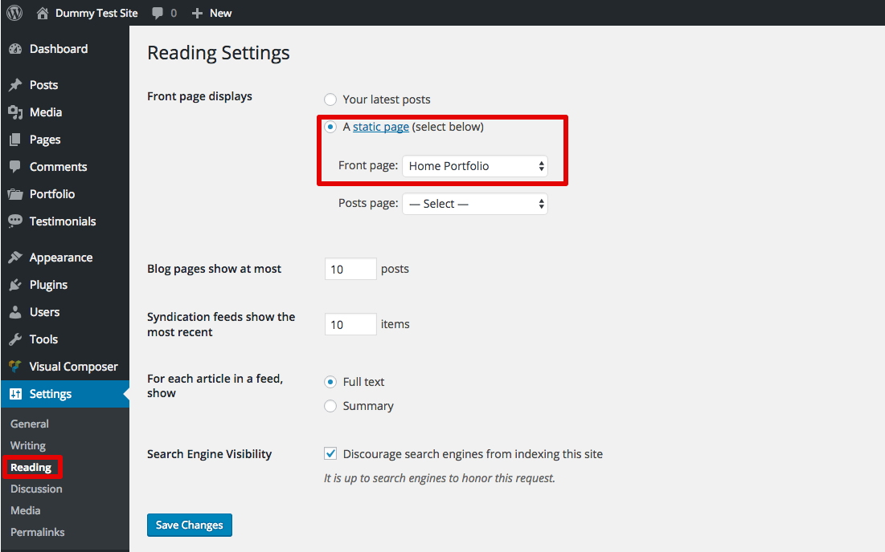
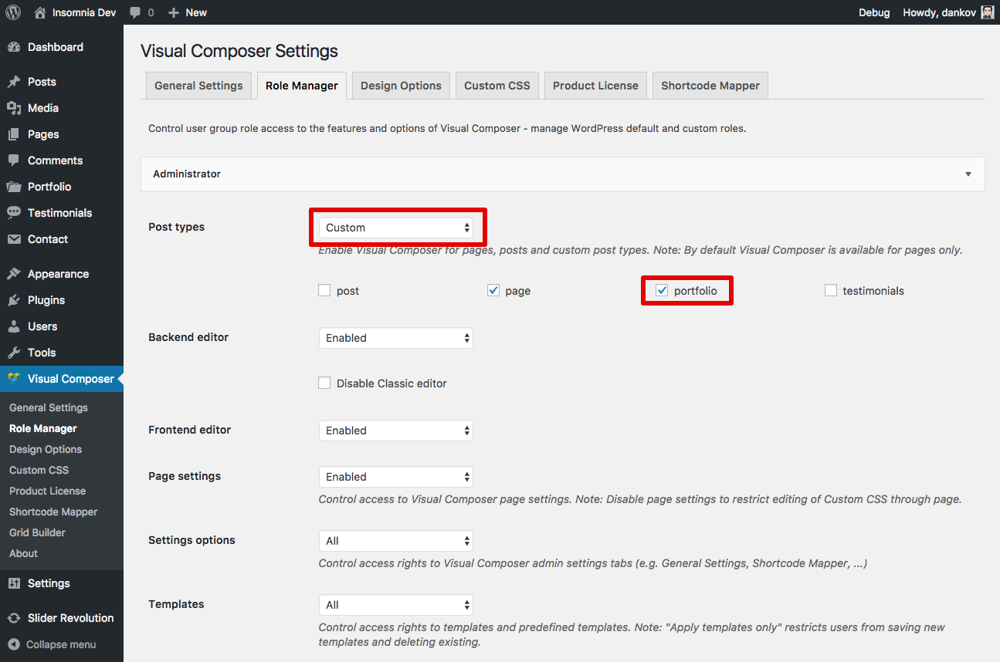
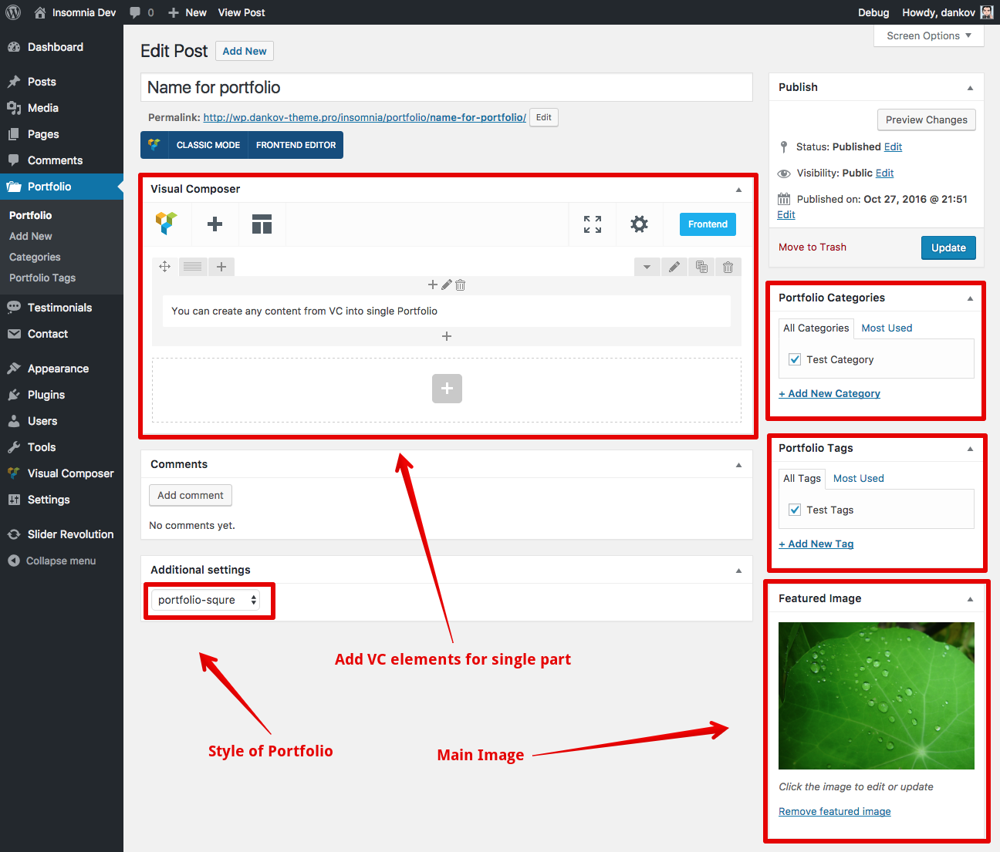
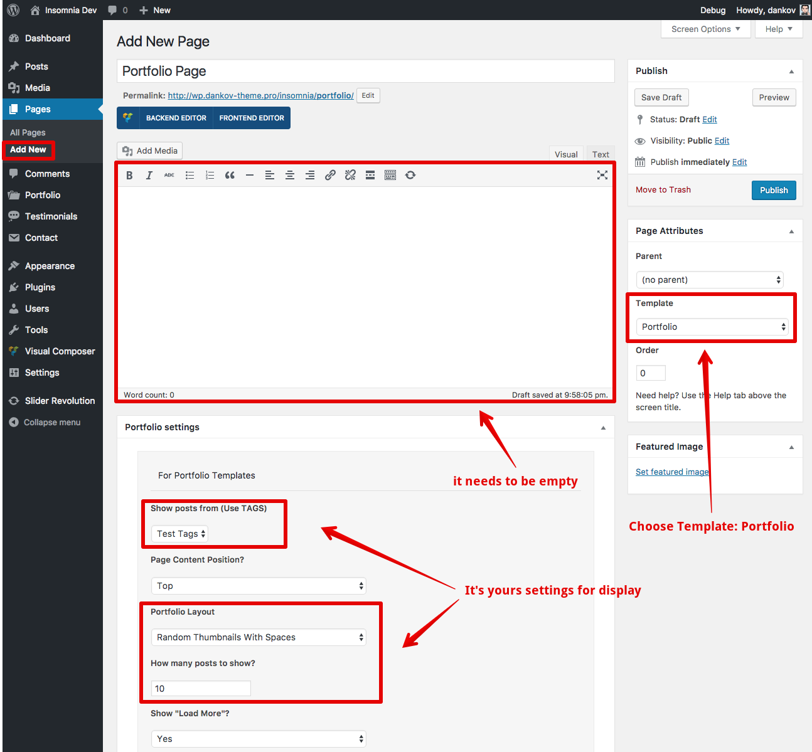
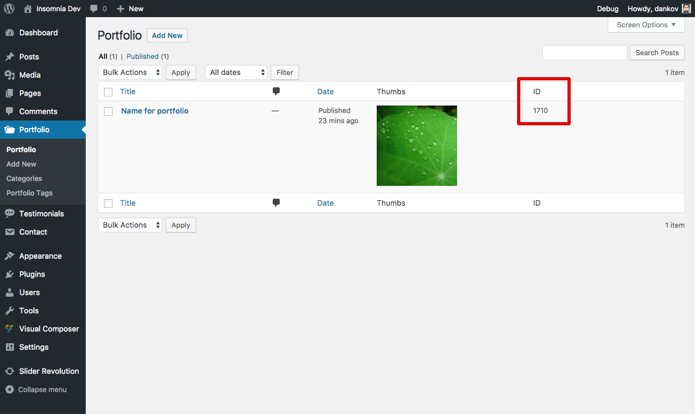
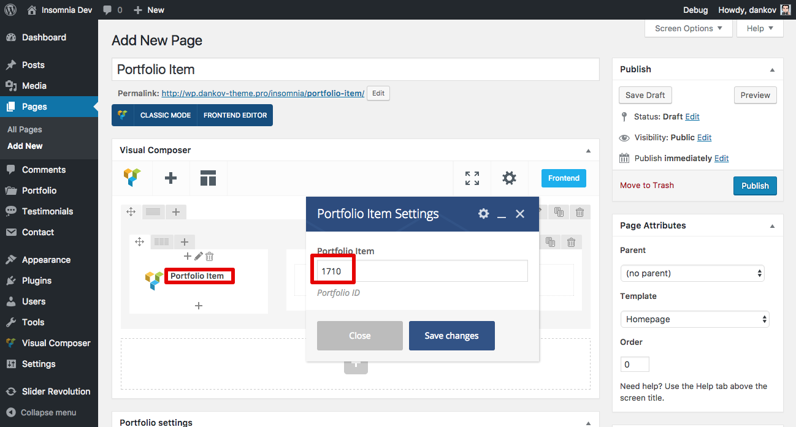
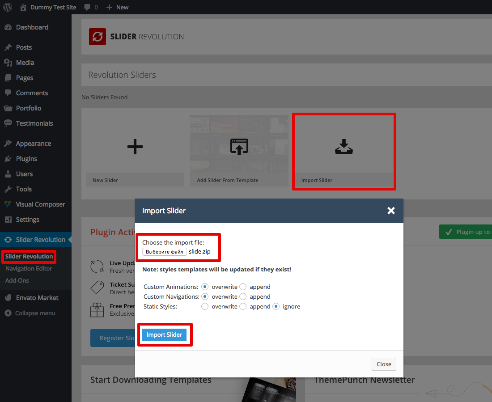
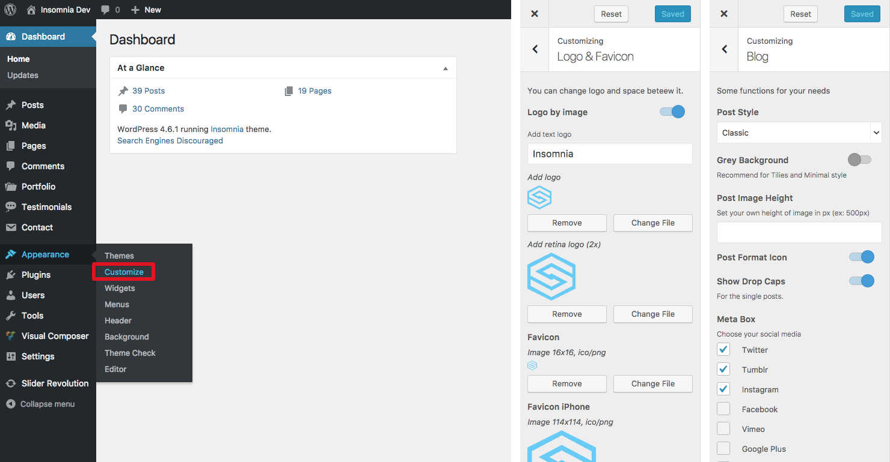

First of all a huge thank you for purchasing my WordPress Theme at ThemeForest. If you have any questions that are beyond the scope of this help file, please ask me a question in ThemeForest. You can also follow me on ThemeForest to keep track of all my theme updates and future themes. Thanks so much!
In order to proceed with the theme installation, you must be running WordPress 3.3 or higher, PHP 5.3 or higher.
You can update your theme via FTP or via WordPress. See the information below for each method. No matter what method you choose, you first need to download the new theme files from ThemeForest.
I recommend you to use the demo content files to build a new website which doesn`t have content yet. Our theme includes xml data files which will allow you to upload the demo content to your website. Demo content is the same as in the Live Demo Preview.

NOTICE: Don`t forget to check the "Download and Import File Attachments" in order to import images too.
Insomnia contain three different home pages, you can choose one of them.

Insomnia has powerful but very easy for setting portfolio. Only three steps to set up. For detail description see screenshots.





Also, you can import ready slider from Demo folder

PS: The message about activating the plugin does not limit its work, it notifies the user about automatic updates, if you buy a separate license for it.
You can not buy a license, and the new version of the Revolution Slider to update with updates of the theme.
The Customizer Panel helps you easily take control over your site, by allowing you to upload your logo and favicon, style the appearance of the theme with your custom colors, change blog style, active features off, paste custom CSS, etc.
To access the Customizer panel, navigate to Appearance → Customize.

Q: I want to install "Business" homepage but I got server error.
A:. Any data (page, posts, media, portfolio, etc) comes from my server. My server online all time but your's server (hosting) gives you a limit on uploading files. It's may be limit for request or limit for time. Try to ask to support of your server company.
Q: I waiting about 3-5 minutes for importing data. It's normal?
A:. Yes, all depends on the power of your server.
Q: I imported demo data but got a lot of errors?
A:. Some .xml files contain data from bbPress forum, BuddyPress, WooCommerce, etc. And if you don't install some of this plugin you will get error.
Q: I change color in Customize Panel but some elements stay blue. Why?
A:. You need to change color manually in page with Visual Composer. Choose Elements (for example Button) and tap Edit and change default colors to your.
Q: Sticky menu doesn't work. Why?
A:. Go to Customize > Menu > Change style for activate sticky mode.
Q: I found bug, what I can do?
A:. It's good. Let me know about it, I fix as soon as possible.
Q: I have message about activating the plugin (Visual Composer or Revolution Slider)
A:. The message about activating the plugin does not limit its work, it notifies the user about automatic updates, if you buy a separate license for it. You can not buy a license, and the new version of the Revolution Slider to update with updates of the theme.
Q: I bought theme by mistake or other.
A:. I do moneyback but only in rare cases. Main rules you can read on Envato Market Refund Rules.
Q: Are you available for freelance, custom works, etc?
A:. Yes, $20 / 1 hour.
Any difficulties with set up homepage "as a demo" - write me via e-mail and provide access to dashboard. Also, if you have questions, let me know about it. support@dankov-themes.com
Always try to provide some your details from site: